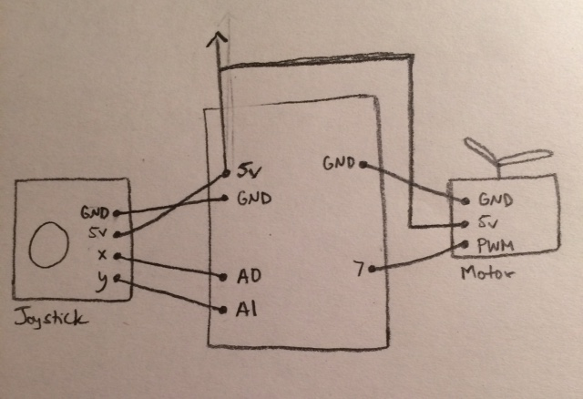
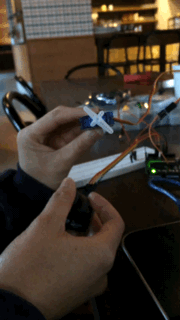
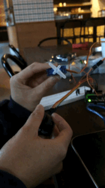

Assignment 5: Motors
Schematic
 This circiut does not require any calculations or resistors (yay!!) because the components have their own resistors built in. A flyback diode was not necessary either because I used a servo motor instead of a DC motor.GIF and Pictures
 
In this circuit input from a joystick is used to control the motor. Pin 7 controls the servo motor as an output. Pin A0 reads the
horizontal postion of the joystick and pin A1 reads its vertical positon as inputs. If the horizontal position of the joystick is less
400 then the motor will move to the right. If the vertical postion of the joystick is greater than 600 then the servo will move to the left.

In this circuit input from a joystick is used to control the motor. Pin 7 controls the servo motor as an output. Pin A0 reads the
horizontal postion of the joystick and pin A1 reads its vertical positon as inputs. If the horizontal position of the joystick is less
400 then the motor will move to the right. If the vertical postion of the joystick is greater than 600 then the servo will move to the left.